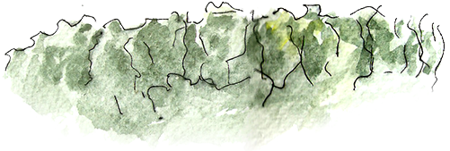

Tras el consentimiento del ágora decidimos abrir los terrenos a base de actos poéticos que irrumpirían en el momento señalado al modo cómo los afluentes se configuran constituyendo el río.
Tales actos poéticos serían decisivos en un doble aspecto. Por el modo cómo serían convocados y por aquello que abrirían. El ágora consintió la condición del modo cómo serían convocados, es decir, que fuere cual fuere la actividad en que se estuviese sumido debía interrumpirse y dar lugar al acto.
El acto tomó esta forma. Todos quedaron sin ojos. Fueron vendados a excepción hecha de uno que guiaba el grupo ciego. Esto traía consigo la absoluta disponibilidad, es decir, la desorientación cabal porque nadie veía nada y una fianza total en quien lo guiaba. A quien entraba en tal juego se le creaba un estado de suspensión, que en la simple historia diaria se guarece en un juego de niños, el juego de la gallina ciega. El estado de suspensión, en la absoluta disponibilidad y fianza, provoca corporalmente el estado de arjé, que no es palpablemente un principio, sino más allá de la voluntad, el intelecto, la imaginación, la memoria y el instinto, una inescrutable vigilia.
El orden propio de esta Phalène fue muy simple. Se trata de alcanzar los terrenos de la ciudad abierta y en ese intento tropezar, reconocer, dar con el límite.
El camino se intentó por la parte alta de los cerros y se descubrió que por allí no había acceso. El cortejo fue detenido por una quebrada inatravesable y que es a la vez uno de los pocos lugares donde el paisaje de la zona es aún originario. Es el paisaje que vio el propio Darwin. Una quebrada agreste sembrada de palmeras propias de la zona, situada a menos de un kilómetro a espaldas del centro de la ciudad de Viña del Mar. Se llegó allí. Todos los vendados fueron alineados. Tras un silencio, que permitiera la expansión de los sonidos del lugar, se pidió que se desvendaran los ojos. Todos se reconocieron detenidos al borde mismo del acantilado de esa quebrada. El juego, entonces, fue el siguiente: «ahora hagan lo que quieran». El lugar era proporcionado, ceñido, apretado. Allí todos jugamos y el juego mismo, absolutamente libre, nos mostró que estábamos todos cerca pero nunca ninguno pudo o supo estar junto. Allí caímos en la cuenta que podíamos estar cerca, reencontrándonos, tras la desorientación, cerca los unos de los otros pero que no dependía de la voluntad el estar junto5. La dispersión también se contiene en lo cerca.
Este acto tuvo lugar en la pequeña isla que enfrenta los terrenos de la ciudad abierta. Se llegó hasta la isla en los botes de los pescadores y se descendió hasta ella con la dificultad que allí impone el mar, constantemente agitado y quebrándose en rompiente. La isla compareció de inmediato como lo cercado, ceñido, rodeado. Es decir, como lo propiamente limitado. Todos los límites se dan allí como un acceso ya negado o a sobrepasar. Así el límite comparece con toda su fuerza. En este sentido el acto poético fue el acto de la plenitud del límite. A su vez esta plenitud y al mismo tiempo totalidad del límite que aparece principal en todas y en cualquier parte de la isla, se da como indefinición. Y con ello, también, el reclamo de orientación.
De este modo la plena limitación se abre en orientación. ¿Qué significa para nosotros y en su sentido corriente, orientarse? En el status en que vivimos la orientación toma su mayor figura en los cuatro puntos cardinales. ¿Qué sucedió en el acto poético de la isla? Algo diferente.
A pesar de que se llevaron cuatro banderas con sus altísimas astas para conservar o reordenar los cuatro puntos necesarios, en vista de los cuales podría orientarse la ciudad abierta, el orden se dio de otro modo. Cuando Alberto Cruz fue requerido para señalar la orientación indicó sólo un punto. Las cuatro banderas con sus cuatro astas, formando un haz, se clavaron allí. Ese punto no fue, tampoco, el posible centro de la isla. Ese punto fue simplemente el lugar donde se había dicho la palabra poética. Y fue allí, porque allí se había dado la palabra pública real. Así la orientación no sobrevino por una medición del espacio en vista de tales o cuales funciones o perspectivas, sino que brotó en el acto donde se abría palabra y lugar. Tal orientación, a su vez, modifica el concepto de límite. Muy ligados van los conceptos de orientación y de límite. La orientación precisa el juego de límites posibles.
Bajo esta nueva orientación el límite ya no aparece como acceso, sea éste negado o variable, como aquello que principalmente une y separa dos momentos.
La orientación surgió en la isla en un punto, como desde una fuente, donde se dieron lugar y palabra, forma y acontecer. En el campo abierto de tal orientación el límite comparece como una invitación, lo propiamente invitante. Invitación de la abertura misma en la que se mantienen forma y acontecer simultáneamente. En este acto poético la isla se nos mostró como una totalidad de límite. Esta totalidad, por serlo, como la indefinición. Ésta trae consigo la necesidad de orientación.
El acto poético descubrió la orientación en un punto, en vez de cuatro, donde se abren simultáneamente lugar y palabra. El límite o frontera, pudiera decirse, es ahí donde se funden forma y acontecer. Posiblemente, ya no acceso sino transparencia, que quiere decir en su sentido último, lo que se deja ver, ofrecimiento, abierta invitación.